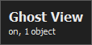

Tools / Ghost View
Ghost View
Make the selected objects see-through, so you can work on them and still see what is behind.
What it does
Ghost View turns the selected objects see-through and tints them. Press it again and each object returns to exactly how it was.

How to use it
- Select one or more objects.
- Run Ghost View (macro in the 9000 Toolkit category, Alt+Z by default).
- Run it again to bring the objects back.
Options
There are no settings. What the key does depends on the selection:
| Selection | Result |
|---|---|
| Objects that are not ghosts | All selected objects become ghosts. |
| Only ghosts | They go back to normal. |
| A mix | Everything becomes a ghost first. |
| Nothing selected | Every ghost in the scene goes back to normal. |
Good to know
- Each object remembers its own vertex colour display and see-through setting, and gets them back on exit, also after saving and reopening the scene.
- The tint uses the object's vertex colour display, so a vertex colour view you had on is replaced while the object is a ghost.
- One undo step.